Sobre mí
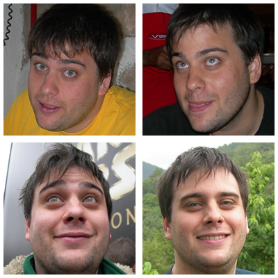Nací en Zaragoza allá por el 1984
Me llamo Miguel Julián, pero casi todo el mundo me llama Miky, y a veces figarocorso si hay un ordenador relacionado
Soy licenciado en ingeniería informática
He trabajado en ANKO SA, Colegio Juan de Lanuza, Zentyal, Frogtek y Sysdig
Pero trabajar con ordenadores acaba siendo tan aburrido...
Que me también encanta:
- aprender todo lo que puedo
- viajar para descubrir nueva gente y lugares
- colaborar con otras personas de forma desinteresada para alcanzar metas mayores
- y también me encanta la enseñanza
Enlaces: ahora eliges tú
Links
- Github: figarocorso
- Autofocus blog
- Recopilación de escritos
- LinkedIn | Last FM
- Github: figarocorso
- Autofocus blog
- Recopilación de escritos
- LinkedIn | Last FM
Grid y Cloud
Grid
Más de un año de Proyecto Fin de Carrera
DVega: Un sistema de gestión de workflows en grid orientado a servicio
Grid computing con Globus. Grid workflows con WSRF
Cloud
Diseño y despliegue de una infraestructura escalable sobre Zarafa
Gestión de configuración para el despliegue de una infraestructura OpenChange
Calidad
Qué he hecho:
Actualmente trabajando en Zentyal
Automatización Jenkins + Sikulli + Selenium + ANSTE
Combat testing + Gestión de despliegue
¿Por qué QA?
- Porque es un procedimiento crítico, que ayuda a los compañeros y no le gusta a todo el mundo
- Porque es algo más que desarrollar
- Porque tiene en cuenta a las personas en las ecuaciones
Desarrollo
Desarrollo web
Python + Django (Zentyal Cloud)
PHP + MySQL (Con un poco de Zend)
JavaScript incluídos jQuery y reactJS
Desarrollo de plugins para Wordpress y temas
Desarrollo de backend
Perl + Redis (Zentyal)
Java + DB4O + Ant (Shogun's Fate)
¿Por qué desarrollo?
Porque es creativo y un reto continuo
Administración de sistemas
Sistemas de correo en Linux
Dovecot y Postfix sobre LDAP/SambaAD en HA
Zarafa y SOGo como soluciones de groupware
Roundcube + desarrollo de plugins de Roundcube
Filtrado de correo: ClamAV, Amavis, SA, Razor
Más sobre administración en Linux
Apache2, Nginx y HAProxy
HA con Corosync y Pacemaker
Administración en Windows Server
Active directory con GPOs y carpetas compartidas
IIS, DNS y SMTP
DevOps
Experiencia
Virtualización con VirtualBox y KVM
Linux containers con Docker
Configuration management con Puppet
¿Por qué DevOps?
Porque tengo buena experiencia como sysadmin
Porque tengo buena experiencia como desarrollador
Porque tengo buena experiencia como QA
Y DevOps une todos los perfiles
La vocación (la llamada)
Enseñanza
He trabajado como profesor de matemáticas e informática durante 4 años
Responsable TIC
Periodismo
2 años como redactor en Genbeta (2M visitas/mes)
"Ratones en la Red" - Sección sobre informática en RNE
Decenas de reviews de discos y conciertos de música para diferentes medios
Otras cosas que me motivan
The truth is out there
Porque trabajar no lo es todo
Motor, astronomía, deporte, viajar, música, escribir, organizar eventos, lectura, cine, ...
Empecemos, va a ser rápido, prometido!
Astronomy

Más que un hobbie, una pasión
Organizar eventos
Esos momentos donde descubres grandísimas personas
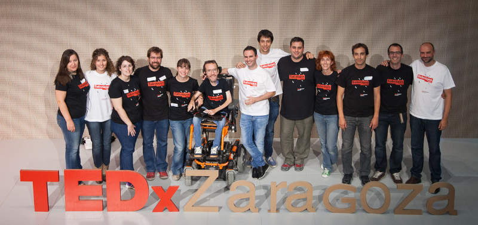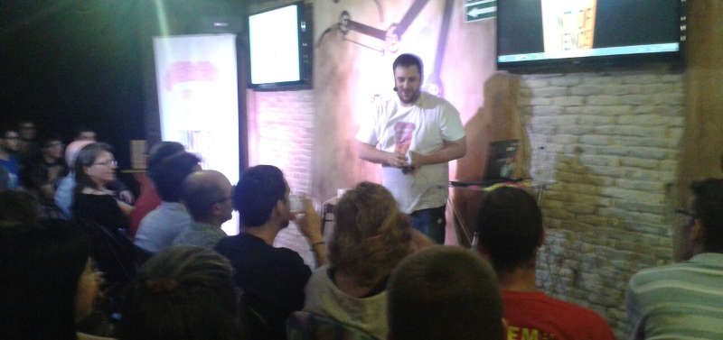
TEDxZaragoza - Proponiendo "Sabotages" a nuestras vidas
Pint of Science - Llevando la ciencia a la gente, a los bares
Motor
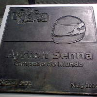 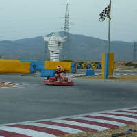 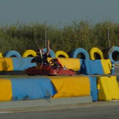Un ídolo... para imitar de muchas formas (¡al menos lo intento!)
Pero también me gusta la teoría, y mucho
Viajar
España, Andorra, Francia, Italia, Monaco, Suiza, Bélgica, Holanda, Inglaterra, Escocia, Irlanda, Austria, Hungría, Bosnia, Serbia, Grecia, Japón, Vietnam... y muchos más por venir
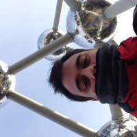Pero para mí, viajar no es sólo conocer nuevos lugares...
Travelling
... es conocer personas, aprender y vivir nuevas experiencias
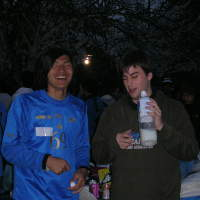 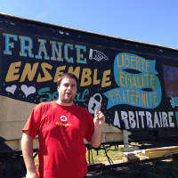
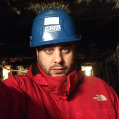
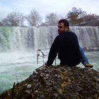
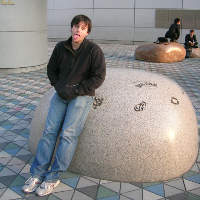
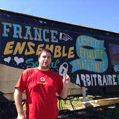
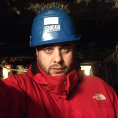
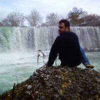
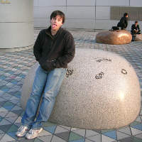
Últimas imágenes
Deporte, malabares y monitor de campamentos
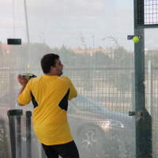 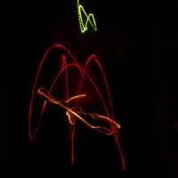 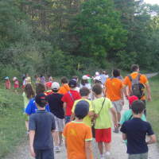Charlas, RNE y un "experto" en python
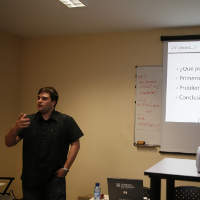 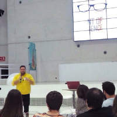 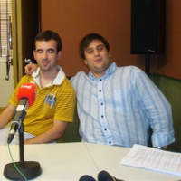 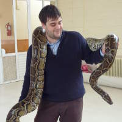Pero todavía hay más actividades para disfrutar
Escribir: Una pasión secreta. No está todo pero echa un vistazo
Guitarra eléctrica: Disfruto la música... así que, ¡claro!
Lectura: El Juego de Ender, Momo, Silmarillion, Papá Goriot, ...
Cine: 12 hombres sin piedad, La princesa prometida, ...
Representación estudiantil: Mucha actividad en asociacionismo y representación estudiantil
Enlaces: ahora eliges tú
Links
- Github: figarocorso
- Autofocus blog
- Recopilación de escritos
- Twitter | Facebook | LinkedIn | Last FM
- Github: figarocorso
- Autofocus blog
- Recopilación de escritos
- Twitter | Facebook | LinkedIn | Last FM